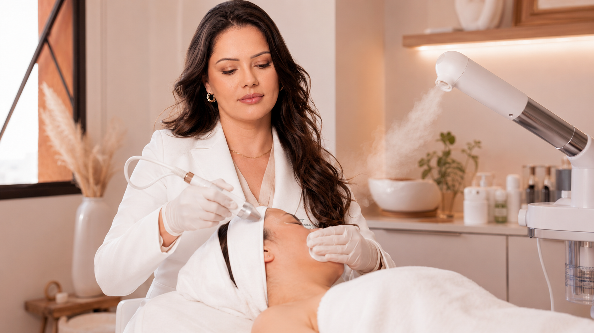

JOURNAL Renovação da pele
Peeling de cristal ou de diamante: o que a comparação realmente explica
Cristais abrasivos e ponteiras de diamante são formas diferentes de microdermoabrasão. Entenda a distinção e quais perguntas ajudam a comparar os serviços sem presumir aparelho ou superioridade.

01 · Cristais e ponteiras de diamante
O que os nomes descrevem
Microdermoabrasão é uma forma de abrasão mecânica superficial. Em sistemas com cristais, partículas abrasivas são direcionadas à pele; em sistemas sem cristais, a superfície de uma ponteira diamantada faz o contato abrasivo. Essa diferença ajuda a entender os nomes “peeling de cristal” e “peeling de diamante”, mas não informa, sozinha, a marca do aparelho, o material exato, a área tratada ou como o procedimento é feito na clínica.
02 · O equipamento não determina sozinho a intensidade
Uma diferença de sistema não prevê o resultado
A sensação e a resposta podem depender de fatores como a ponteira, o meio abrasivo, o contato, a pressão e o número de passagens, além da pele e da área. Os estudos de aparelhos e técnicas específicos não podem ser traduzidos em instruções universais nem usados para inferir como um serviço local é executado. Uma pessoa também pode reagir de modo diferente a técnicas superficialmente parecidas.
03 · Mecanismo não é prova de superioridade
Evidência clínica e limites da comparação
Um estudo comparativo de 2006 avaliou marcadores moleculares em apenas dez participantes após abrasão com cristais ou pressão sem cristais; ele não foi um ensaio de resultados estéticos entre os atuais serviços “cristal” e “diamante”. Uma revisão baseada em evidência descreveu limitações da microdermoabrasão para algumas queixas, como alterações de pigmentação e acne vulgar. Esse conjunto não estabelece que um formato seja clinicamente superior ou ideal para uma preocupação específica.
04 · Confirme como cada opção é realizada
O que perguntar sobre o serviço real
Pergunte qual aparelho e ponteira são usados; o que o serviço faz e quais limites tem; como a intensidade é ajustada; o que pode acontecer com a barreira e a sensibilidade; e por que a opção combina com seu objetivo. Compare as páginas de peeling de cristal / microdermoabrasão e peeling de diamante. A avaliação deve considerar a pele atual, o histórico e o protocolo real.
05 · Referências
Referências
As fontes abaixo ajudam a entender o tema em termos gerais. Elas não confirmam o aparelho, protocolo ou indicação disponível na clínica.
Contato
Pergunte sobre este tema ou outra preocupação
Envie sua dúvida com as informações que você se sente confortável em compartilhar. A resposta será enviada pelos dados informados.
Próximo passo